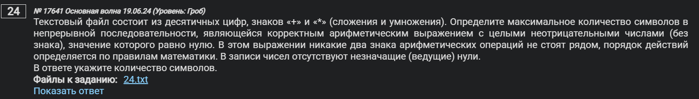
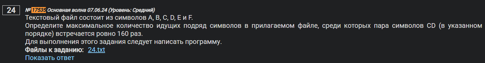

Важно: приступать к заданиям 24, 26, 27 имеет смысл ТОГДА И ТОЛЬКО ТОГДА, когда вам буквально больше нехуй делать в экзамене. Т.е. вы ИДЕАЛЬНО выучили ВСЕ, что не касается этих трех заданий.
Довольно разнообразное, относительно сложное задание, топ - 3 по сложности из всего экзамена. Решается, конечно же, кодом.
Это не потому, что я такой вредина и не хочу сотки для вас. Наоборот - я, как и вы, хочу максимального результата для вас. Поэтому разумнее будет потратить время на что-нибудь другое, что-то, что у вас западает в случае, если у вас есть такие задачи.
Возможно, впервые за всю историю моих объяснений ЕГЭ информатики вы увидите,,,
О нет,,,
Т Е О Р И Ю , , ,
Теория
24-ое задание про анализ большого кол-ва символов в строке. Для этого нам нужен набор инструментов и принципов, которые и будут рассмотрены в разделе теории.
Первое, что нам нужно - так это открывать файл. Раз вы здесь, то вы уже умеете это делать, благодаря заданиям 17 и 9.
Напомню:
f = open('24.txt')Также, у нас есть функция read(), которая считывает все, в этом файле
f.read()Естественно, если мы принтанем f.read(), то у нас выведется все, что есть в этом файле в терминал.
Мы также можем считывать файл построчно:
f.readlines()Как это работает?
Предположим, есть файл test.txt и в нем написано следующее:
1
2
3
4
Тогда команда readlines(), примененная к этому файлу даст:
['1\n', '2\n', '3\n', '4']
Мы видим, что у нас получился список. А раз так, мы можем обращаться к нему по индексам:
f = open('test.txt')
a = f.readlines()
print(a[1])
# Выведет 2Окей, тут закрепили.
У нас еще есть readline() - без буквы S. Это работает как эээээ “счетная машинка”.
f = open('test.txt')
a = f.readline()
print(a)
# Выведет 1
b = f.readline()
print(b)
# Выведет 2Т.е. у этой команды есть своеобразный “курсор”, который прыгает по строкам в зависимости от того сколько раз вызывается readline() или от какой строки вызывается readline().
Основные методы: Генераторы списков, replace(), split()
Знакомый нам replace() из 12ого задания. Почему конкретно он нам пригодится проще объяснить на простом примере.
Предположим, у нас есть файл, в котором есть строка
abcdbdabc. Наша задача состоит в том, чтобы не учитывать символыdbт.е. найти такую подстроку, в которой буквыb и dне идут подряд.
Мы можем между символами b и d поставить пробел т.е. вместо строки abcdbdabc мы получим строку abcdb dabc. Для этого, собственно, и нужен replace():
s = open('test.txt').readline()
s = s.replace('bd', 'b d')
print(s.split(' '))И вот мы подошли ко второму методу: split(). Он используется как разделитель по определенному символу, в данном случае по пробелу. Т.е. кодом выше мы получим следующее:
['abcdb', 'dabc']
Поздравляю, мы выполнили задание. Мы гарантируем, что у нас, по условию, буквы d и b не стоят рядом.
А что если нас попросят максимальную длину такой подстроки, в которой
d и bне стоят рядом? В таком случае нам понадобятся генераторы списков.
Что это за зверь такой? На самом деле, мы много раз встречали генераторы списков в экзамене, просто не называли их так. Самый очевидный пример, который можно вспомнить - решение 19ого, 20ого и 21ого заданий кодом. Там было что-то такое:
print('19', (s for s in range(1, 128) if f(s, 2)))
print('20', (s for s in range(1, 128) if not f(s, 1) and f(s, 3)))
print('21', (s for s in range(1, 128) if not f(s, 2) and f(s, 4)))Вот эти s for s in range() - это и есть генераторы списков. В наших реалиях 24ого номера они используются так:
s = open('test.txt').readline()
s = s.replace('bd', 'b d')
s = s.split(' ')
print(max(len(ps)) for ps in s)Ну т.е. мы ищем такую максимальную длину подстроки max(len(ps)) среди всех подстрок ps в самом файле s. Че-нить получим.
На этом, вроде как, все. Время практики.
Начнем с пиздеца, чтобы сразу испугаться, а потом не бояться. Самое сложное из реалистичных 24ых заданий было дано на основной волне 08.06.2024.
Пример 1)

№ 17641 Основная волна 19.06.24 (Уровень: Гроб [Субъективно: переоценено])
Текстовый файл состоит из десятичных цифр, знаков «+» и «*» (сложения и умножения). Определите максимальное количество символов в непрерывной последовательности, являющейся корректным арифметическим выражением с целыми неотрицательными числами (без знака), значение которого равно нулю. В этом выражении никакие два знака арифметических операций не стоят рядом, порядок действий определяется по правилам математики. В записи чисел отсутствуют незначащие (ведущие) нули.
В ответе укажите количество символов.
Собсна, в файле лежит ровно то, что вы от него и ожидаете: самый обычный разговор студентов МФТИ.
...
0*0+0*0+0*+*0*61738+0*0*0+0**0+*46831+0+0*0*0+0*0*+*0+88908*0*0+0*92126*0+0*+0+48870*0+0+0+++73990+*0*0+0*16774*0*0*79462++0+0+0*0*0*0+0+0*0*0*0*0*0*0*32450+0+**59332*0*0+0*0+0*95545*0+*+0*0+0+0+63489+0*16007*61061+0*0**0++0+0+0*60068+0*0+0+34934**0+*0*0*20925*0*0*0*0+17012++0+0*0*0+0+29820+0*0+0*0+0*0*0+*+0*0+0*0*+*90286+*0+0+0+0*0*0*0+0*0+0+0*49463*0*0*25637*0+0*0*0+0+0*0+83108+*0*0+*0*10538*0+0*++0*0+55364*0+0*0+0*0***0+0*54168+0*0+**89965*0*0+0*0*0**+0+*0+0+0*0*0*0***0+0++0+22551*+0++0+0*0*0+0*+0+**0*+*0***0*++62311+0+0*0+0*0+0*0*68572*0+*53543+0*+0*0*0*+*38723*78164+82653*0*0++0+0*0*0*0+0+0*0+0*+0*0*0+46861*0+0+48207*0*0+0**0*43858++0*0*23703**0+0+0*0+0+0*27776++*0+0*0+0*0*0+81692+0+5540*0+0*0*0+0+0*++0+0+0+++0*0*+9727*0*0*38139*0*0*0+0*38733+0*0*0+0+0+40096+0+*0+0+0+0*0+0+70084+2372+0*0*0*0+0+0+0*0*0+0+*59174+0+0+0*0++91100+66725+0+**0+0+0*0++76422*0*0+0**0+*0+0+32846*0+0*0+0*0*0+39451++0+0*0*93191*91138*++0+0*+77594*+0*0+0+0+0*0**0+*0*0+0*47653+0+0+0+0+0+0*0+0*0+0+0+0+3808*5053*0*68887*0+21438+53519+0*++0+44085*0*97899*0*62586+0+0+0+0*17319+0+75511+16485+0*11231++0*0*0++*0*0+0+0+0*0*0+0+++0*0+0+0*0*0+0*0*0*0+0+0*0*0*++0*0+0*0+0+*0++86147+21994*0*0*0+0+0+0+*0+77986+0+0+0*0*
...
Закидываем файлик в рабочую папочку и открываем его в питоне.
s = open('24_17641.txt').readline()А далее избавляемся от подряд идущих различных комбинаций * и +. Это можно сделать различными способами, но самое универсальное решение такое:
while '+*' in s: s = s.replace('+*', '+ *')
while '*+' in s: s = s.replace('*+', '* +')
while '**' in s: s = s.replace('**', '* *')
while '++' in s: s = s.replace('++', '+ +')Таким образом, мы гарантируем, что комбинации * и + не стоят рядом.
Теперь мы можем спокойно пойти по всем этим кусочкам. Теперь нам нужно в каждом таком куске посмотреть все возможные арифметические выражения.
Ну т.е., например, если есть кусок типа:
123+0*12*0+150+|+, где | - наш разделитель пробелом
То нам нужно рассмотреть:
1
12
123
123+0
123+0*1
123+0*12
123+0*12*0
123+0*12*0+1
123+0*12*0+15
123+0*12*0+150
0
0*1
0*12
0*12*0
0*12*0+1
0*12*0+15
0*12*0+150
И так далее
Ведь все это - корректные арифметические выражения. У всех них есть общие черты:
- Они не начинаются на знак
- Они не заканчиваются на знак
- Они не содержат несколько знаков подряд (исключили выше)
- Ни один из операндов не должен быть или включать в начале себя один из следующих элементов:
[00, 01, 02, 03, 04, 05, 06, 07, 08, 09]
Именно эти условия и нужно реализовать в программе.
Чисто технический момент: очевидно, что во время итераций циклов, мы не рассматриваем одну и ту же строку несколько раз. Т.е. если мы находимся на i-ом элементе, то мы не должны ехать на i-1 элемент, а должны на i+1 элемент.
Сделаем вот так:
l = '00 01 02 03 04 05 06 07 08 09'
m = []
for kusok in s.split(' '):
for i in range (len(kusok)-1): # Чтобы не было out of range
ps = kusok[i]
if ps[0] not in '+*' and kusok[i] + kusok[i+1] not in l.split():
for j in range(i+1, len(kusok)):
ps += kusok[j]
if ps[-1] not in '+*':
if eval(ps) == 0:
m.append(len(ps))
# print(len(ps))
print(max(m))Что такое eval?
Функция eval() буквально создана для этой задачи. Она считывает строку как математическое выражение и выдает ответ. Например, если у вас есть строка s = '2+3*4', то print(eval(s)) даст 14.
В нашей программе, после исключения всех неудовлетворяющих случаев нам нужно, чтобы наше арифметическое выражение было равно 0, по условию.
Вот зачем нам нужен eval().
Все круто, соединяем код.
s = open('24_17641.txt').readline()
while '+*' in s: s = s.replace('+*', '+ *')
while '*+' in s: s = s.replace('*+', '* +')
while '**' in s: s = s.replace('**', '* *')
while '++' in s: s = s.replace('++', '+ +')
x = '00 01 02 03 04 05 06 07 08 09'
m = []
for kusok in s.split(' '):
for i in range (len(kusok)-1): # Чтобы не было out of range
ps = kusok[i]
if ps[0] not in '+*' and kusok[i] + kusok[i+1] not in x.split():
for j in range(i+1, len(kusok)):
ps += kusok[j]
if ps[-1] not in '+*':
if eval(ps) == 0:
m.append(len(ps))
# print(len(ps))
# print нужен чисто для того, чтобы понимать, что программа вообще работает
print(max(m))Ответ: 142.
Однако, в таком коде есть несколько недочетов:
- Такой код считает довольно долго. В файле 5,5 млн символов и при этом у нас есть 2 вложенных цикла т.е. сложность примерно . Более того, на экзамене код может выполняться еще дольше, поскольку там компы слабенькие. Хотелось бы, чтобы считал побыстрее. Мы займемся этим.
- Поскольку мы говорим, что ни один из операндов не должен быть или включать в начале себя один из следующих элементов:
[00, 01, 02, 03, 04, 05, 06, 07, 08, 09], то может возникнуть ситуация следующего вида. Предположим, есть число15017. В какой-то моментps = kusok[i]станет равно 0. И мы упустим часть вариантов с15017, поскольку встретим01в середине числа. Связано это с тем, что в коде выше у нас реализовано НЕ ВСТРЕЧАЕМ 00, 01, 02 итд, а не НЕ НАЧИНАЕТСЯ С 00, 01, 02 итд. Благо, нам повезло и программа сработала как надо.
Об оптимизации:
Если бы мы знали максимальную длину подстроки на данной итерации, то мы бы смогли отбросить кучу вариантов, связанных с тем, чтобы перебирать подстроки короче максимальной (нам ведь максимальная длина в ответ и нужна),,, Добавим вот такое условие:
###
m = -float('inf') # <- Изменили немного
for kusok in s.split():
if len(kusok) > m: # <- Вот это условие
for i in range(len(kusok) - 1)
###
###
if eval (ps) == 0:
m = max(m, len(ps)) # <- Изменили немного
###Так программка заработает гораздо быстрее.
Пример 2)

Текстовый файл состоит из символов A, B, C, D, E и F.
Определите максимальное количество идущих подряд символов в прилагаемом файле, среди которых пара символов CD (в указанном порядке) встречается ровно 160 раз.
Для выполнения этого задания следует написать программу.
Решается вот так:
s = open('24_17535.txt').readline()
while 'CD' in s: s = s.replace('CD', 'C D')
s = s.split(' ')
m = -float('inf')
for i in range(len(s) - 160):
sm = sum(len(kusok) for kusok in s[i: i + 161])
m = max(m, sm)
print(m)Разберём код по косточкам — что он делает, почему это работает и где в нём заложена идея решения.
Задача в одном предложении
Нужно найти максимальную длину подстроки, в которой пара символов CD встречается ровно 160 раз.
Идея решения
Если «разрезать» исходную строку по всем вхождениям CD, то мы получим куски между этими парами. Любая подстрока, содержащая ровно 160 пар CD, неизбежно покрывает ровно 161 соседний кусок (между 161 кусочком находится 160 разрезов CD). Значит, достаточно пробежать все окна из 161 подряд идущего куска и взять максимальную сумму их длин — это и будет искомая максимальная длина.
Что делает код построчно
s = open('24_17535.txt').readline()- Читает первую строку файла.
while 'CD' in s: s = s.replace('CD', 'C D')- Заменяет каждое вхождение
CDнаC D(вставляет пробел междуCиD). - После этой операции пробел — это «видимый разрез».
- Цикл
whileздесь затем, чтобы исключить ситуации по типуCDCD->C DCD.
s = s.split(' ')- Разбивает строку по пробелам на список кусков (назовём их сегментами).
- Эти куски — это ровно то, что лежит между встречами
CD. - Ключевой факт: сумма длин кусков, взятых подряд, равна длине исходного фрагмента строки, который они покрывают. Мы не «потеряли» ни
C, ниD: разрез стоит между ними, и буквы остались в соседних кусках (левый кусок заканчивается наC, правый начинается сD), так что длина считается корректно.
m = -float('inf')
for i in range(len(s) - 160):
sm = sum(len(kusok) for kusok in s[i: i + 161])
m = max(m, sm)
print(m)- Берём скользящее окно из
161подряд идущего куска.
Почему 161? Между 161 кусочком — ровно 160 разрезов, то есть 160 парCD. range(len(s) - 160)даёт последние допустимые начала окна: последнее окно — с индексаlen(s)-161включительно.sm— сумма длин кусков в окне, то есть длина подстроки исходной строки, содержащей ровно 160CD.- Берём максимум по всем окнам, печатаем.
Почему это корректно
- Каждое вхождение
CDпревращено в один разрез (пробел). - Любая подстрока с 160 встречами
CDпересекает ровно 160 разрезов, то есть покрывает 161 кусок. - Наоборот, всякое окно из 161 подряд идущего куска соответствует подстроке с ровно 160
CD. - Сумма длин кусков — это ровно длина исходной подстроки (вставленные пробелы мы не считаем).
Нюанс про перекрытия: у пары CD нет перекрывающихся вхождений (чтобы одно начиналось внутри другого) — это возможно, скажем, у AAA в строке из A, но не у двухсимвольного CD, потому что следующее вхождение должно начинаться на следующем символе и тогда предыдущая D не совпадает с C.
Что можно улучшить (если хочется «идеально»)
-
Убрать лишний
while:s = open('24_17535.txt').readline().strip() s = s.replace('CD', 'C D').split(' ') -
Не пересчитывать суммы с нуля на каждом шаге, а использовать префиксные суммы (или «скользящую сумму»):
s = open('24_17535.txt').readline().strip() parts = s.replace('CD', 'C D').split(' ') lens = [len(x) for x in parts] # префиксные суммы pref = [0] for x in lens: pref.append(pref[-1] + x) best = 0 for i in range(len(parts) - 160): # сумма длин на отрезке [i, i+160] включительно sm = pref[i + 161] - pref[i] if sm > best: best = sm print(best)Это даёт линейное время без внутреннего
sum(...)в каждом окне.
Почему такой подход вообще «лучший» для этой задачи
- Мы свели «подсчёт ровно 160 вхождений» к арифметике по сегментам.
- Наивная двухуказательная техника с прямым подсчётом
CDв подстроках будет медленной на длинной строке. - Здесь всё работает за O(n): один проход на замену, один на разбиение и один на скользящее окно (с префиксами — чистый O(n)).
Если захочется альтернативы — можно сразу найти все позиции начала CD, добавить фиктивные «границы» по краям и затем максимизировать расстояние между позицией i и позицией i+160 с помощью двух указателей. Но текущий «разрезной» приём выглядит проще и очень читаемо отражает логику задачи: 160 CD → 161 кусок → максимальная сумма длин.